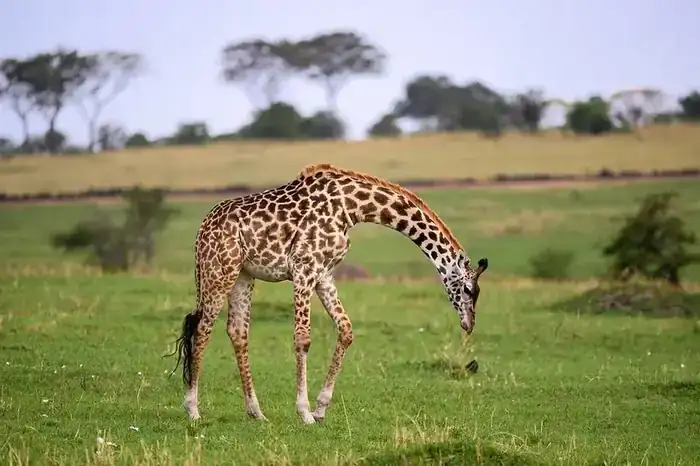
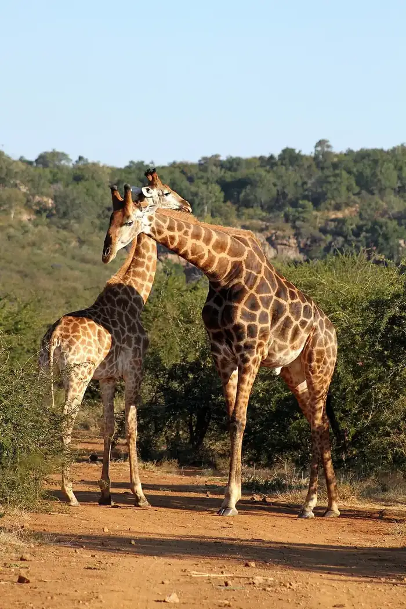
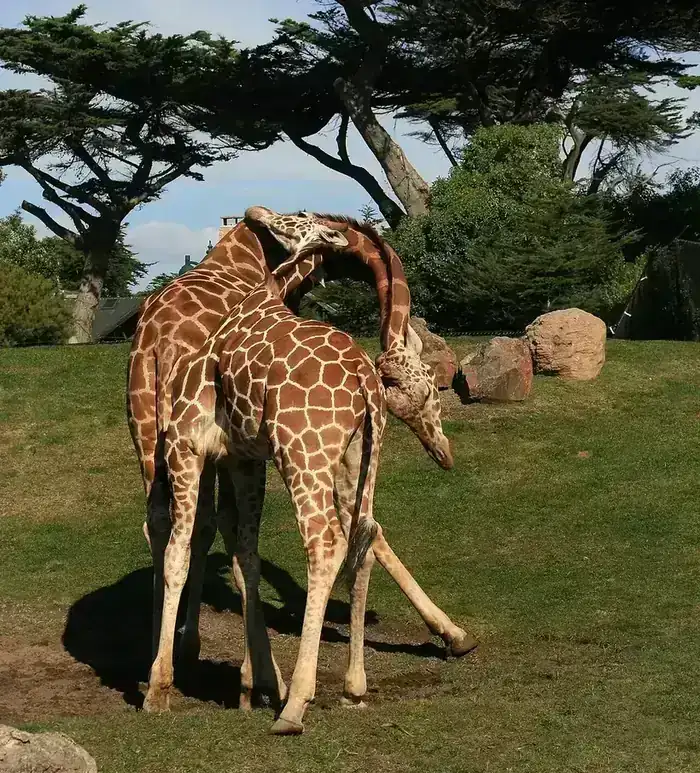

The example everyone knows
Lamarck used the giraffe to explain inheritance of acquired characteristics: ancestors stretched for high leaves, the neck lengthened, and the lengthening was passed on. The story is intuitive, memorable, and wrong in its mechanism — there is no known route by which stretching an animal's neck alters the genes it gives its offspring.
Maps, diagrams and images






What is less well known is how strange the anatomy is. A giraffe has seven cervical vertebrae. So do you, and so does a mouse. The neck is long because each vertebra is hugely elongated, not because there are more of them — and the constraint that keeps the count at seven is one of the more interesting open questions in vertebrate palaeontology.
The competing explanations
The feeding hypothesis says longer necks reach higher browse during competition. The sexual-selection hypothesis, revived by Simmons and Scheepers in 1996, points out that males use their necks as weapons in fights and that neck length is more sexually dimorphic than the feeding hypothesis needs. The thermoregulation hypothesis notes the neck's surface area and the animal's heat budget.
The evidence is mixed. Giraffes often feed below their maximum reach, which weakens the feeding story; males feed higher than females, which supports it partly. Neck growth in males continues past sexual maturity, which supports the sexual-selection account. The fossil record is thin, and the closest relatives — Samotherium and others — show intermediate neck lengths, which tells us the transition was gradual but not why it happened.
Documented: seven cervical vertebrae, each elongated; a gradual fossil transition from shorter necks.
Well supported: sexual selection on males, as at least a major contributor.
Partially supported: feeding competition, probably as a secondary pressure.
Not supported: Lamarckian inheritance. Stretching does not write to the genome, in giraffes or anything else.
Open: why the vertebral count is fixed at seven, and what the actual selective pressure was at each step.
Why it belongs here
Because it is the most-quoted example of a mechanism that does not work, attached to an animal whose real anatomy is stranger than the story. The archive keeps it as a reminder that the famous version of an evolutionary explanation is usually the least accurate one.
Open resources on this topic
- BookThe giraffe's neck : a novel — Schalansky, Judith, 1980- · 2014 (Internet Archive, free to read)
- BookThe giraffe's neck — Schalansky, Judith, 1980- author · 2015 (Internet Archive, free to read)
- BookI wonder who stretched the giraffe's neck — Hodgson, Mona Gansberg, 1954- · 1999 (Internet Archive, free to read)
- PapersOpen-access articles: DOAJ · PubMed Central · Internet Archive Scholar
- BooksPublic-domain and borrowable copies: Open Library · Project Gutenberg · Google Books
Cite this page
Momin, S. (2026). The Giraffe's Neck. The Larger World Archive. https://drsamonline.github.io/LARGE_GLOBE/giraffe-neck.htmlMomin, Sohil. “The Giraffe's Neck.” The Larger World Archive, 2026, https://drsamonline.github.io/LARGE_GLOBE/giraffe-neck.html.Momin, Sohil. “The Giraffe's Neck.” The Larger World Archive, 2026. https://drsamonline.github.io/LARGE_GLOBE/giraffe-neck.html.@misc{the2026giraffe,
author = {Momin, Sohil},
title = {The Giraffe's Neck},
year = {2026},
howpublished = {The Larger World Archive},
url = {https://drsamonline.github.io/LARGE_GLOBE/giraffe-neck.html},
note = {Last reviewed 20 November 2026}
}Last reviewed 20 November 2026 · Corrections policy · this page is not peer reviewed
Sources for this page
- Wikipedia, “Giraffe” — anatomy, feeding and the neck debateen.wikipedia.org
- Simmons & Scheepers (1996), American Naturalist — the sexual-selection accountdoi.org
- Wikipedia, “Lamarckism” — the mechanism and why it failsen.wikipedia.org
- Wikipedia, “Cervical vertebrae” — the seven-vertebra constrainten.wikipedia.org